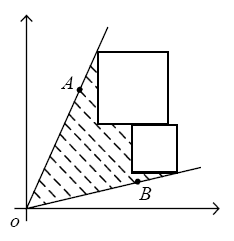

of the coordinates, and both of its radial lines are specified by the input. The sizes of the squares are also specified by the input, and the squares can shift vertically and horizontally. Now your job is to use the squares and the radial lines of the angle to enclose the maximum area, which excludes the area of the squares (see Figure 1). You should note that the edges of the squares must be parallel to the axes.

Figure 1
There are several test cases. Each test case starts with a line consisting of one positive integer N
(0 < N < 10)
, which is the number of the squares. The next line contains four decimal numbers:
xa, ya, xb, yb
, which denote two points A
(xa, ya)
and B
(xb, yb)
. The radial lines OA
and OB
form the angle. Each of the following N
lines contains a decimal number, which is the edge length of a square. All the decimal numbers mentioned above are in the range [1, 20]. A test case with N = 0
ends the input, and should not be processed.
For each data case, output one line containing a decimal number, which is the maximum area that can be enclosed by the radial lines of the angle and the squares. The value should be rounded to three digits after the decimal point.
1
2.000 3.000 3.000 2.000
1.000
0
2.000